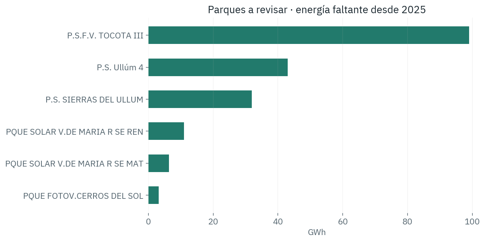
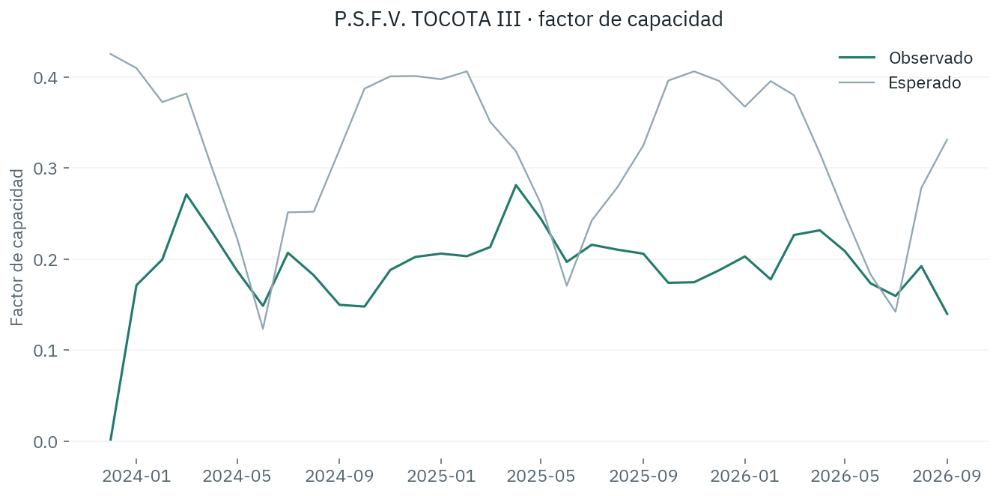
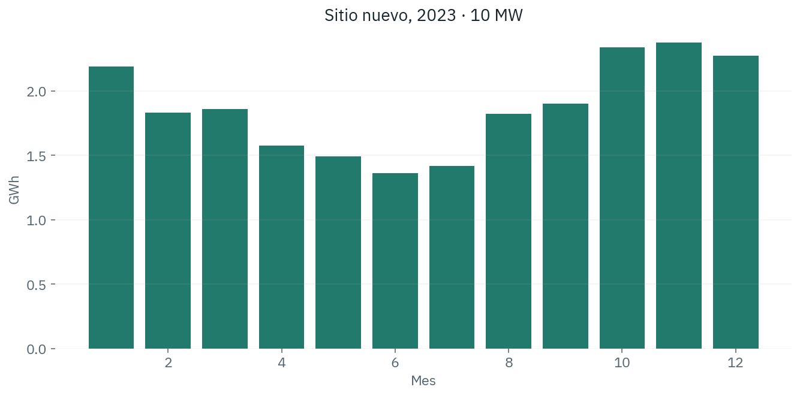

Solar / Datos · RespaldoQué parque solar mirar primero
Argentina · generación mensual

14 sitios con señal desde 2025, 201 GWh faltantes, unos USD 12,0 millones a USD 60/MWh. Una señal no es una falla confirmada.
Ignacio Melinc · Matias Young · Francisco Fabrello · Malena Garcia Moraglio
Elegir con 2024
La prueba queda aparte

XGBoost. Prueba desde 2025: RMSE 0,066, MAE 0,043, R² 0,487. Parque no visto en el entrenamiento: RMSE 0,059.
El parque con más energía faltante
P.S.F.V. TOCOTA III

Un sitio nuevo
10 MW junto a un parque existente, clima de 2023

22,44 GWh en el año. A 30 km del clima copiado. Fuera del rectángulo de parques, el número es un caso límite.